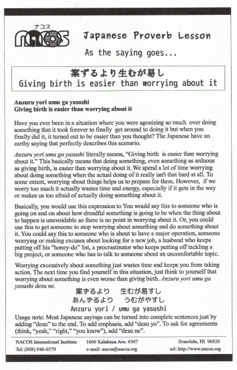

Anzuru yori umu ga yasushi
Giving birth is easier than worrying about it
Have you ever been in a situation where you were agonizing so much over doing something that it took forever to finally get around to doing it but when you finally did it, it turned out to be easier than you thought? The Japanese have an earthy saying that perfectly describes this scenario.
Anzuru yori umu ga yasushi literally means, "Giving birth is easier than worrying about it." This basically means that doing something, even something as arduous as giving birth, is easier than worrying about it. We spend a lot of time worrying about doing something when the actual doing of it really isn't that hard at all. To some extent, worrying about things helps us to prepare for them. However, if we worry too much it actually wastes time and energy, especially if it gets in the way or makes us too afraid of actually doing something about it.
Basically, you would use this expression to You would say this to someone who is going on and on about how dreadful something is going to be when the thing about to happen is unavoidable so there is no point in worrying about it. Or, you could use this to get someone to stop worrying about something and do something about it. You could say this to someone who is about to have a major opperation, someone worrying or making excuses about looking for a new job, a husband who keeps putting off his "honey-do" list, a procrastinator who keeps putting off tackling a big project, or someone who has to talk to someone about an uncomfortable topic.
Worrying excessively about something just wastes time and keeps you from taking action. The next time you find yourself in this situation, just think to yourself that worrying about something is even worse than giving birth. Anzuru yori umu ga yasushi desu ne.
Usage note: Most Japanese sayings can be turned into complete sentences just by adding “desu” to the end. To add emphasis, add “desu yo”. To ask for agreements (think, “yeah,” “right,” “you know”), add “desu ne”.

| © 1995-2013 NACOS International Institute. All Rights Reserved. |